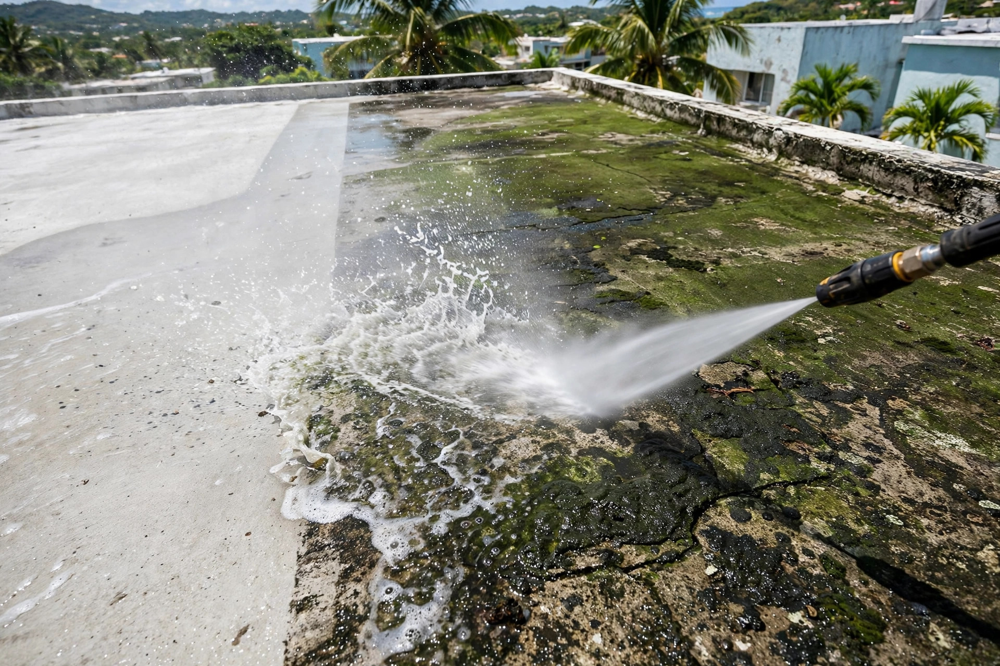
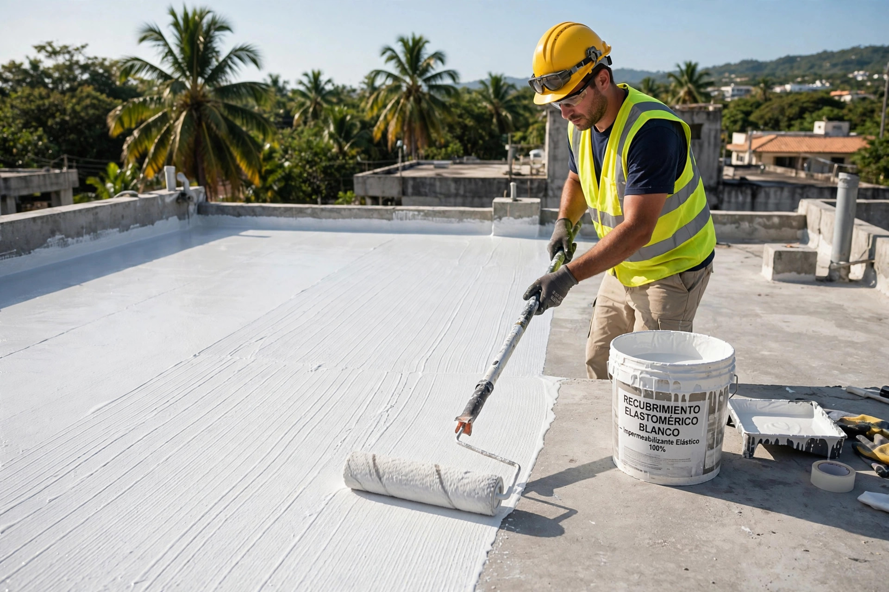
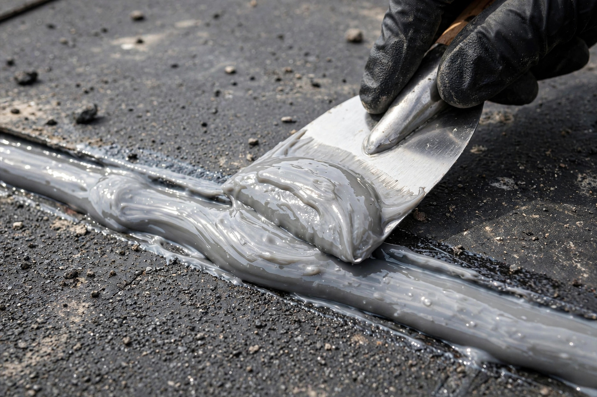
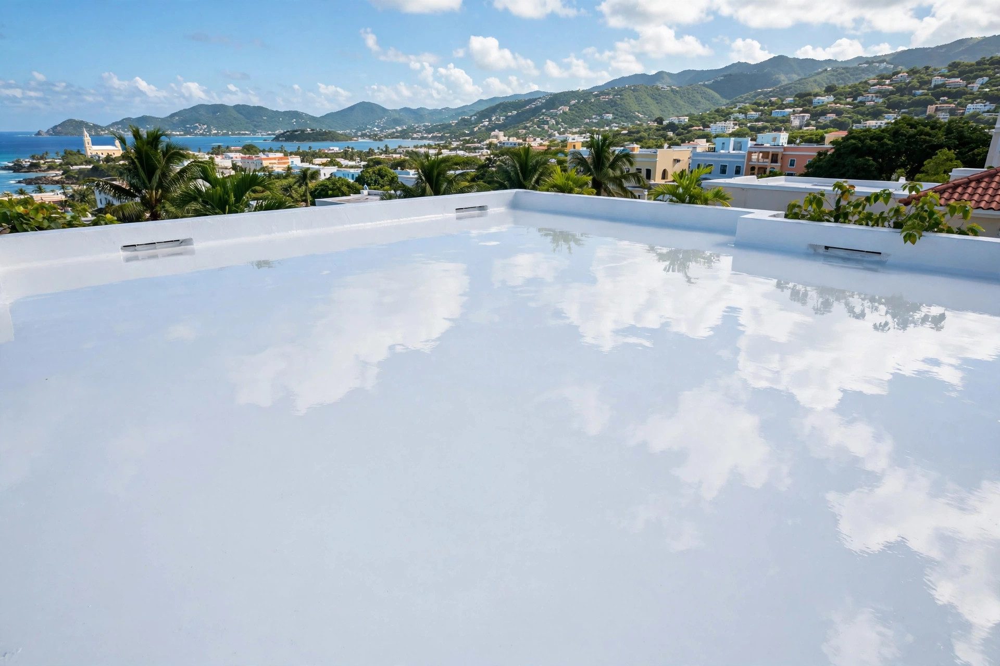

El sistema correcto para tu techo, con lavado a presión y garantía por escrito.

Sellado, reparación y mantenimiento de techos: así queda cuando se hace bien.



Sellado de techos con sistemas Danosa, elastomérico y silicón, lavado a presión y garantía por escrito.
Sistema Danosa aplicado por conocedores.
Recubrimiento flexible de alto rendimiento.
Máxima resistencia al agua estancada.
Preparación profunda antes de sellar.
El agua tiene que correr, no quedarse.
Trabajo respaldado, sin letra pequeña.
Trabajo serio, trato directo y resultados que se ven.
Danosa, elastomérico y silicón: el correcto para tu techo.
Preparación profunda antes de sellar.
Respaldamos nuestro trabajo.
Respuesta rápida y directa.
Lo que todo dueño de casa pregunta antes de sellar su techo.
Depende del techo: evaluamos condición, drenaje y uso, y te recomendamos el sistema correcto. Por WhatsApp te orientamos gratis.
Sí. El sellador solo pega bien sobre superficie limpia y firme; el lavado a presión es parte de la preparación.
Sí, si está bien adherido. Si está levantado o cuarteado, se remueve primero.
Sí. Todo trabajo sale con garantía por escrito.
Por WhatsApp al 939-265-9195: envíanos fotos del techo y te respondemos.
Esta página es una muestra de lo que hacemos. Llevamos tu negocio a internet con oferta de lanzamiento por tiempo limitado.